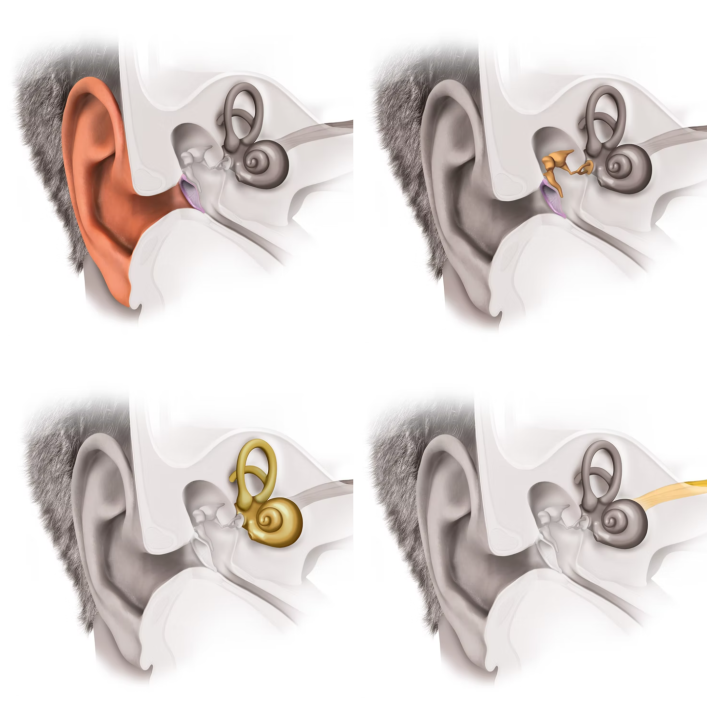
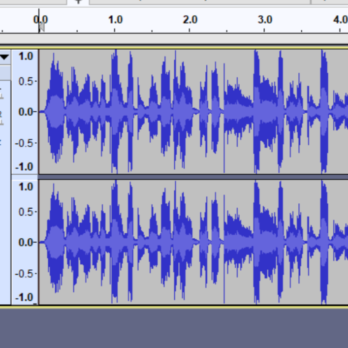
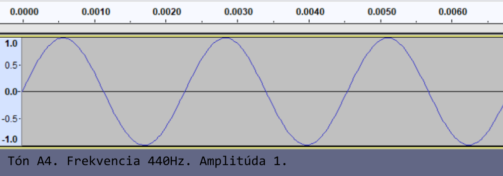
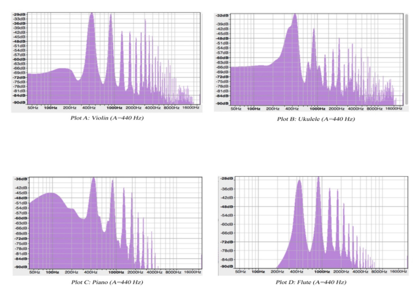

Čo ti napadlo, keď si počul nahrávku? Vtáčiky? Príroda? Jarné ráno na dedine? Určite ti napadlo aj viac vecí, ale stavíme sa, že jedna ti nenapadla. Zamyslel si sa niekedy nad tým, ako je možné, že počuješ zvuk z telefónu, počítača či televízora? Ako je možné, že vôbec počuješ?
Dostať zvuk do počítača, tam ho upraviť a následne ho z neho dostať von je úloha ako stvorená pre goniometrické funkcie. Konkrétne pre sínus a kosínus. No najprv treba vedieť, ako je možné, že počujeme a ako funguje zvuk.
Prostredie, v ktorom sa šíri zvuk
V škole si sa asi už dopočul, že zvuk je mechanické vlnenie. To znamená, že sa šíri pomocou vĺn a na svoj prenos potrebuje nejaké médium. Nedokáže sa šíriť v prázdnom priestore. Na prenos zvuku môžu slúžiť rôzne materiály, napríklad voda, drevo alebo aj kosti, ktoré tvoria našu čelusť. Ak neveríš, spýtaj sa Beethowena, ako komponoval svoje skladby, keď ohluchol. No najčastejšie sa stretávame so vzduchom. Ten nesie našu reč, hudbu, hluk mesta ale aj ticho prírody.
Vzduch je veľmi dobrým médiom na prenos zvuku. Jeho častice nie sú príliš zviazané na to, aby sa nedokázali rozvlniť. Nie sú ani príliš ďaleko od seba na to, aby nedokázali niesť zvuk. Keď niečo vydá zvuk, rozvlní sa vzduch, vlna sa šíri prostredím až príde k niečomu, čo je schopné ju zachytiť a spracovať. To môže byť napríklad tvoje ucho alebo mikrofón.
Zvuková vlna
Poďme sa pozrieť na zvukovú vlnu zblízka. Môžeme si ju predstaviť ako vodnú hladinu, do ktorej padne kameň. Vlnky sa šíria preč od miesta, kde padol kameň a postupne slabnú. Častice, ktoré tvoria vodu sa však nehýbu smerom preč od kameňa. Ostávajú na svojom mieste, iba sa pohnú hore alebo dole. Ako keď diváci na štadióne robia mexickú vlnu. Tiež neutekajú zo svojich miest preč. Iba sa v správnom čase zdvihnú. Tak nejak je to aj s časticami nielen vo vode, ale aj vo vzduchu.
Obr. 1.: Takto vyzerá zvuková vlna. Reproduktor rozkmytá častice vzduchu blízko seba. Tie náražajú do svojich susediek a tie zasa do svojich. Animácia je úryvok z videa, v ktorom je pekne vysvetlené, ako sa zvuk dostane od reproduktora až po tvoje ucho. Video je v češtine, takže si ho môžu pozrieť aj menej jazykovo zdatní.[1]
Tak ako vodnú hladinu sčerí kameň, vzduch môže zvlniť nejaký náraz, hlasivky či reproduktor. Nejaká takáto podobná vec naruší pokojnú "hladinu" vzduchu a prinúti častice robiť vlny. Tie sa šíria prostredím. Niektoré sa zachytia v materiáloch, kde sú častice pevne zviazané a nedokážu sa hýbať. Iné postupne zoslabnú až sa vzduch opäť upokojí. Ďalšie sa môžu dostať do tvojho ucha, kde sa prenesú do mozgu a tam sa spracujú. Výsledkom je, že ty počuješ zvuk.
Ucho
Zvukové vlny k nám prichádzajú skoro stále. Všimni si, že aj keď si myslíš, že je úplné ticho, aj tak budeš niečo počuť. Vzdialenú cestu, kvapkajúcu vodu, ľudí vonku. Niečo sa nájde vždy.
O zachytenie zvukovej vlny sa stará tvoje ucho. Najprv to vonkajšie, ktoré ti trčí z hlavy. Zachytená vlna sa dostane k bubienku, ktorý rozvibruje kostičky v strednom uchu. Tie donesú signál k orgánu kochlea (asi ho poznáš pod menom slimák). Tam už čakajú vláskové bunky, ktoré premenia vibrácie na elektrický signál do nervu. Pomocou nervovej sústavy sa dostane do mozgu a tam tvoj mozog vyhodnotí, že si niečo počul.[2]

Obr. 2.: Vľavo hore je vonkašie ucho. Vpravo hore je stredné ucho. Vľavo dole je vnútorné ucho a vpravo dole je sluchový nerv. Za obrázok vďačíme tejto stránke, kde je naše ucho dobre popísané.[2]
Mikrofón a reproduktor
Na nahrávanie zvuku sa zvyčajne používa mikrofón. Určite si vo svojom živote videl aspoň jeden a ak je z teba nádejná spevácka hviezda, tak si ho aj držal v ruke.
V mikrofóne sa nachádza tzv. membrána. To je malý kúsok kovu (alebo iného vhodného materiálu), ktorý je ako štuplík jemne nastoknutý na magnet a okolo neho je navitá cievka. Zvukové vlny narážajú do membrány a ona sa hýbe hore a dole. Spolu s ňou sa hýbe aj cievka. Keďže si na hodinách fyziky určite dával pozor, vieš, že takýto pohyb cievky okolo magnetu vzbudzuje elektrický prúd. Elektrický prúd nesie zvukový signál na ďalšie spracovanie.
Obr. 3.: Nahrávanie zvuku pomocou mikrofónu. Ukážka je z tohoto videa.[3]
Mikrofónov je veľa druhov a každý je dobrý na niečo iné. Jedny sú lepšie na nahrávky orchestra, druhé zasa používajú speváci pri štúdiových nahrávkach a iné moderátori v televízií. Ďalší typ mikrofónu sa nachádza aj v tvojom telefóne (veď ako inak by si vedel telefonovať?). Líšia sa vo veľkoti membrány, kvalite či veľkosti samotného mikrofónu.
Inak zvuku, ktorý je už "zapísaný v elektrickom prúde" sa hovorí analógový signál.
Reproduktor funguje opačne ako mikrofón. Na začiatku stojí zariadenie, ktoré prevedie digitálny signál na elektrický. Prúd ide po dráte až sa dostane k cievke. Cievka je stále ten istý drát, len je namotaný okolo valčeka. Elektrický prúd vytvára magnetické pole a z drátu, kadiaľ tečie robí magnet. Známa to vec z fyziky je dôležitá hlavne pri cievke. Okolo cievky je obyčajný magnet. No a čo robia dva magnety keď sú pri sebe? Buď sa priťahujú alebo odpudzujú. Teda buď sa posúvajú k sebe alebo od seba. Tým, že v cievke je elektrický prúd raz silnejší a raz slabší, mení sa aj jej magnetické pole. S magnetom okolo nej sa raz priťahuje viac, inokedy menej. Môže sa aj prepólovať, vtedy sa budú odpudzovať. To má za následok, že cievka sa hýbe hore a dole. Na valček s cievkou je napojená membrána. Ona chodí tiež hore a dole, naráža do vzduchu a vytvára zvukové vlny, ktoré počujeme.[4]
Prevedenie zvukového signálu na digitálnu informáciu
Z mikrofónu treba zvuk dostať do počítača. Elektrický signál je spojitý, teda ide v jednom kuse nepretržite. Takýto signál je istotne kvalitný a sú v ňom zachytené aj tie najjemnejšie detaily zvuku. Ibaže ho nevieme celý čarovne preniesť do počítača.
Našťastie po svete chodili šikovný ľudia, ktorí vymysleli zariadenie na spracovanie zvuku pre počítače. Táto mašinka sa volá Analog to digital converter a funguje nasledovne. Každých x sekúnd zmeria veľkosť signálu, ktorý do nej prichádza. Čas a veľkosť sa zapíšu do počítača. Keď si z toho spravíme graf, že čas bude na osi x a veľkosť signálu na osi y, prekvapivo dostaneme funkciu, ktorá je zložená z viacerých sínusov rôznych frekvencií, amplitúd a fázových posunov. Skrátka taký dobrý sínusový guláš. Táto funkcia opisuje daný kúsok prírody fakt dobre. Vďaka nej je zvuk veľmi dobre popísaný, vieme ho očistiť od šumu, zosilniť, zoslabiť, postrihať. Skrátka všetko, čo sa so zvukom dá robiť.
Nepredstavuj si však nádhernú čistú vlniacu sa krivku. Zvuk taký nie je. Nachádza sa v ňom veľa rôznych tónov, hlasov, šumu a každá drobnosť je opísaná inak.

Obr. 4.: Takto vyzerajú zhruba 4 sekundy ľudskej reči popísanej sínusmi. Po kliknutí na obrázok sa ti ukáže iný obrázok. To je poriadne prizoomovaná ľudská reč. Začína sa ukazovať štruktúra sínusov. Za povšimnutie stojí, že po priblížení to už nie sú 4 sekundy reči, ale 4 milisekundy ľudskej reči.
Zvuk ako sínus
Zvuk už je nahratý v počítači no jeho graf je príliš komplikovaný na vysvetľovanie. Treba začať od niečoho jednoduchšieho.
Najľahší je úplne obyčajný sínus. Dá sa meniť jeho frekvencia a amplitúda. Rýchlo si spomeň, čo sú zač tieto veci a ako sa dajú meniť. Čím je frekvencia menšia, tým je zvuk hlbší. Naopak, čím je frekvencia väčšia, tým je zvuk vyšší. My ľudia počujeme frekvencie v rozsahu od 20Hz do 20kHz. Keď počúvame zvuk s frekvenciou 20Hz, prichádza do nášho ucha 20 zvukových vĺn za sekundu. 20kHz je najvyšší zvuk, ktorý počujeme. Určite vieš, že keď počúvame zvuk s frekveciou 20kHz, je to zvuk s frekvenciou 20 000Hz (premieňanie jednotiek). Vtedy do nášho ucha prichádza až 20 000 zvukových vĺn za sekundu. Amplitúda mení hlasitosť zvuku. Čím je väčšia, tým je zvuk hlasnejší.
Ako názornú ukážku sme si vybrali tón A4. Má peknú okrúhlu frekvenciu 440Hz. Prvý je tón A s amplitúdou 1 a druhý s amplitúdou 0,025. Čo myslíš, ktorý z nich bude hlasnejší? Tretí tón je tiež tón A, ale posunutý o oktávu nižšie. Jeho frekvencia je 220Hz. Ktorý z nich bude hlbší? Frekvencie všetkých tónov si môžeš pozrieť na tejto stránke.
Tón A4. Frekvencia 440Hz. Amplitúda 1.
Tón A4. Frekvencia 440Hz. Amplitúda 0,025.
Tón A3. Frekvencia 220Hz. Amplitúda 1.
Pomocou zmeny frekvencie a amplitúdy sa dajú spraviť všetky tóny v rôznych hlasitostiach. Ako iste tušíš, orchestrálna skladba by sa z toho vyrobiť nedala. Husle, trúbka, klavír, klarinet. Každý z nich vie zahrať tón A, ale každému inak zneje. Kde sú teda skryté čary, že každý nástroj zahrá tón inak? Kúzlo je skryté v znamienku +. V obyčajnom sčítavaní.
Keď rôzne hudobné nástroje hrajú tón A, každý z nich má najvýraznejšiu frekvenciu 440Hz. No každý z nich popritom vydáva aj iné frekvencie. Ich amplitúda (hlasitosť) je menšia. Tón "neprekričia", ale dodajú mu niečo, čo voláme farba. Práve farba tónu odlišuje od seba rôzne nástroje.
V ukážke zafarbíme tón A rôznymi frekvenciami. Na tóny hudobných nástrojov si však netrúfneme, pretože oni sa skladajú z veľmi veľa frekvencií. Skrížili sme iba čistý tón A s inými frekveciami. Ukážky sú tu:
Tón A4. Frekvencia 440Hz. Amplitúda 1. K nemu je pričítaná fekvencia 220Hz s amplitúdou 0.5: sin(440x) + 0.5*sin(220x).
Tón A4. Frekvencia 440Hz. Amplitúda 1. K nemu je pričítaná fekvencia 880Hz s amplitúdou 0.5: sin(440x) + 0.5*sin(880x).
Tón A4. Frekvencia 440Hz. Amplitúda 1. K nemu je pričítaná fekvencia 880Hz s amplitúdou 0.5 a frekvencia 220Hz s amplitúdou 0.25: sin(440x) + 0.5*sin(880x) + 0.25*sin(220x).

Obr. 5.: Galéria grafov k spomínaným tónom. Klikaním na obrázok si ich vieš prezerať.
Prešli sme si zopár jednoduchých zvukov. Teraz si už určite vieš spojiť tón s tým, ako vyzerá v grafe. Zložitejšie zvuky, ako je napríklad hudba alebo reč, sa skladajú z veľmi veľa sínusov rôznych frekvencií a amplitúd. Na prvý pohľad to vyzerá ako jeden veľký chaos, no dá sa v tom spraviť poriadok.
Pokročilými metódami sa dá zistiť z akých frekvencií sa zvuk skladá. Dokonca vieme aj povedať amplitúdu frekvencií. Slúži na to niečo, čo sa volá frekvenčná analýza. Robí sa pomocou Fourierovej transformácie. Týmto chceme pozdraviť všetkých budúcich a aj terajších vysokoškolákov, ktorým barón Fourier nedá spávať. Fourierovu transformáciu teraz rozoberať nebudeme. Chceme vám však ukázať frekvenčnú analýzu tónu A4 rôznych hudobných nástrojov. Je na nej pekne vidieť, že frekvencia 440Hz má pri každom nástroji najväčšiu amplitúdu. Okrem nej má každý nástroj zastúpené aj iné frekvencie. Tieto frekvencie dodávajú farbu pre zvuk, ktorý vychádza z nástroja. Vďaka farbe tónu znie každý nástroj inak a my vieme rozoznať, či hrajú husle, piáno alebo flauta.

Obr. 6.: Husle, ukulele, piáno, flauta. Tieto štyri nástroje zahrali tón A, ktorý bol nahratý do počítača. Fourierovov transformáciou sa zistilo, z akých frekvencií sa tóny skladajú. Výsledok sa nakreslil do grafu, kde na osi x sú frekvencie a na osi y je amplitúda (teda ako hlasno je danú frekvenciu v tóne počuť).[5]
Na záver krátke zhrnutie. Vďaka sínusu a kosínusu vieme nahrať do počítača zvuk a tam ho mať uložený. Potom sa s ním dá už ľahko pracovať. Dokážeme ho prehrať, poslať, odstrániť šum, pridať/ubrať hlasitosť, zmiešať s iným zvukom a veľa iných vecí. Prácu so zvukom uľahčuje Fourierova transformácia, ktorá zvuk rozloží na frekvencie. Keď poznáme zastúpenie a veľkosť frekvencií, vieme ich jednotlivo potlačiť/zvýrazniť alebo úplne vymazať. Výsledkom je, že si môžeš púšťať pesničky, filmy či volať cez videohovor.
Ako počujú zvieratá
Pre niekoho možno prekvapujúca informácia, ale zvieratá počujú inak ako my. Zvukové vlny môžu mať rôznu dĺžku a my počujeme len nejakú časť z týchto dĺžok. Nepočujeme všetky zvuky, ktoré sú okolo nás. Je to tak zrejme preto, aby sme neboli zahltení príliš veľa informáciami. V prírode je to tak zariadené, že každý živočích počuje práve to, čo potrebuje. Vlnové dĺžky, ktoré preňho nie sú podstatné jednoducho nezachytí. Keďže každé zviera žije v inom prostredí, živí sa inou potravou, sú preňho dôležité iné vlnové dĺžky a preto každý počuje trochu inak.
🦗 Cikády: istý druh cikády má uši na kolenách. Dokonca fungujú podobne ako naše ľudské, aj keď tak nevyzerajú.[6]
🐬 Delfíny: delfíny, podobne ako netopiere sa v priestore riadia echolokáciou. Delfín vydáva tenučké pískanie, ktoré sa odráža od okolia. Podľa odrazených zvukových vĺn vie delfín určiť, či je pred ním nejaká prekážka, ako je hlboká voda, či sa v jeho okolí nachádza jeho predátor alebo iný delfín. Vedci dlho zisťovali, ako je možné, že delfín tak dobre počuje aj keď nemá uši. Podarilo sa im zistiť, že delfín počuje svojou čelustnou kosťou. Tá zachytáva zvukové vlny podobne ako naše uši.[6]
🐘 Slony: človek by si pomyslel, že slony sa bežne dorozumievajú trúbením. Nie je to celkom pravda. Slony vydávajú veľmi hlboké tóny, ktoré človek nezachytí. Oni ich počujú a to dokonca až na 10 kilometrov.[6]
🐈 Mačky: jeden výskum sa zaoberal tým, či mačky ľúbia muziku. Ľúbia, ale nie hocijakú. Musí byť skomponovaná práve pre ne. Mačky vydávajú zvuky v určitých frekvenciách a v určitom "rytmuse". Výskumníci zložili mačacie pesničky obsahujúce ich obľúbené frekvencie. Keď pesničky pustili svojim poslucháčkam, tie sa túlili k reproduktorm ako divé.[6]
🕷 Pavúky: tarantula nemá uši a ani žiadna časť jej mozgu nespracováva zvuk. Napriek tomu však počuje. Jemné chĺpky na jej nožičkách dokážu zachytiť zvukové vlny a pomáhajú jej s orientáciou v priestore. Iný, menší, druh pavúkov má na predných labkách nervové bunky, ktoré dokážu spracovať určité frekvencie. Dokáže tak určiť dosť presnú polohu svojej koristi.[7]
🐳 Veľryby: desaťtisíce kilometrov. To je vzdialenosť, na ktorú sa počujú veľryby. Veľryba plávajúca pri Írsku sa vie dorozumieť s tou, ktorá brázdi vody Karibiku. Ľudia im však komunikáciu kazia. Ťažba ropy, veľké priemyselné rybolovy a iné činnosti robia oceán hlučným miestom, v ktorom rozhovor veľrýb zaniká.[7]
🕊 Holuby: časť vynikajúcich orientačných schopností holubov je postavená na ich ušiach. Vnútri ucha majú kúsky nejakého kovového materiálu, ktorý je schopný zachytiť zemské magnetické pole. To pomáha holubovi vytvoriť si mapu terénu a navigovať sa v ňom. Dá sa teda povedať, že holuby "počujú" zemské magnetické pole.[8]
🦋 Nočné motýle: istý druh pre niekoho potvor, pre niekoho krásnych stvorení, drží rekord v zvieracej ríši. Dokáže počuť najvyššie frekvencie. My ľudia počujeme 20 000Hz. Tieto stvorenia počujú 300 000Hz.[7]
🦜 Domáce vtáčiky: vtáky, ktoré chováme ako domácich miláčikov majú radi hudbu. Dokonca niektorá sa im páči viac a niektorá menej. Vo všeobecnosti majú radi klasickú hudbu alebo jazz. Daj si však pozor, čo necháš svojho miláčika počúvať. Jeden papagáj si obľúbil hudobný žáner, ktorý jeho majiteľ veľmi nemusel. Vtákovi sa pesničky páčili, tak sa ich naučil a spieval ich svojmu gazdovi celé dni.[7]
[1] Khan Academy. 2014. Jak vzniká zvuk?. https://cs.khanacademy.org/science/fyzika-vlneni-a-zvuk/x34b3f391df7f0014:mechanicke-vlneni/x34b3f391df7f0014:zvuk/v/production-of-sound
[2] MEDEL. 2023. Ako funguje sluch?. https://www.medel.com/sk/about-hearing/how-hearing-works
[3] Into The Ordinary. 2016. How do microphones work? - Recording Explained. https://www.youtube.com/watch?v=d_crXXbuEKE&ab_channel=IntoTheOrdinary
[4] Animagraffs. 2021. How Speakers Make Sound. https://www.youtube.com/watch?v=RxdFP31QYAg&ab_channel=Animagraffs
[5] Jannereth E., Esch L.: Analyzing Timbres of Various Musical Instruments Using FFT and Spectral Analysis. 2021.
[8] SIMPSON D.: How do pigeons find their way home? We looked in their ears with a diamond-based quantum microscope to find out. 15.11.2021. https://findanexpert.unimelb.edu.au/news/34101-how-do-pigeons-find-their-way-home%3F-we-looked-in-their-ears-with-a-diamond-based-quantum-microscope-to-find-out?fbclid=IwAR0kJZw8bkLrFV9zenqJELpo62vaao0BWuG5535NVqmEPunuCSUzOg13too#:~:text=We%20know%20pigeons%20use%20visual,navigate%20using%20Earth's%20magnetic%20field